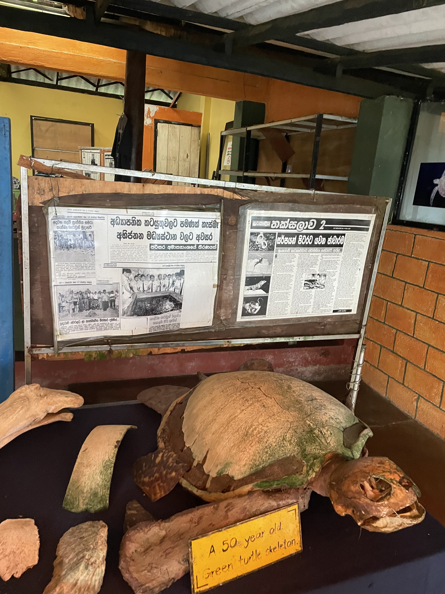
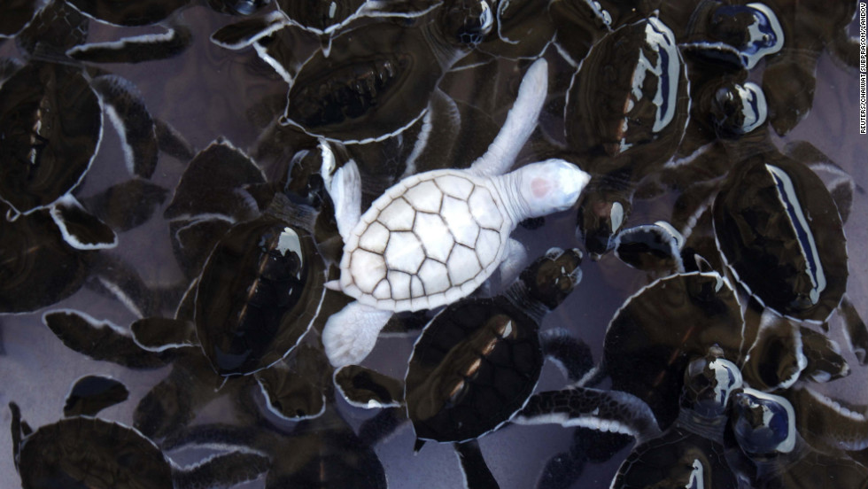
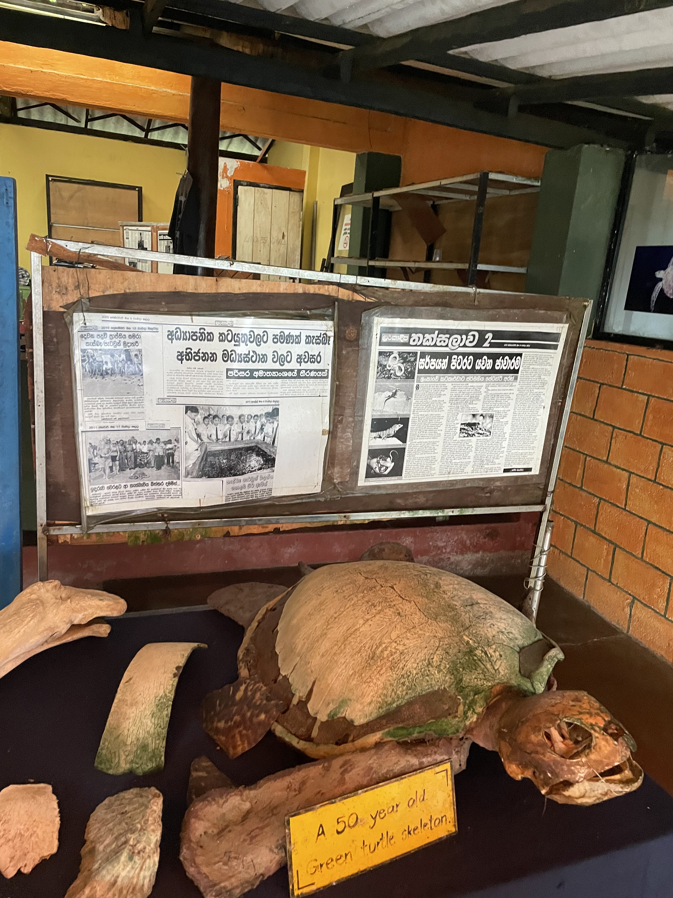
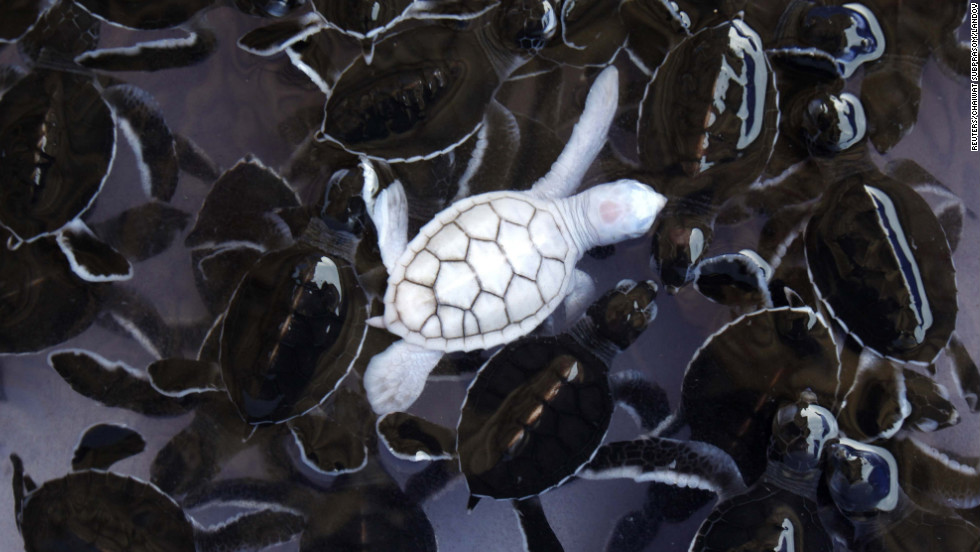

Welcome To
benthota Turtle Hatchery
The Bentota Turtle Hatchery in Sri Lanka is an important conservation project dedicated to the protection and preservation of turtles. Located in the town of Bentota, along the western coastline of Sri Lanka, the hatchery plays a crucial role in safeguarding turtle eggs and rehabilitating injured turtles.

 


